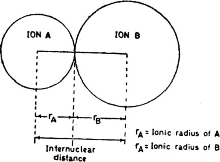

Lattice energy
Lattice energy is the energy needed to separate a crystal into isolated ions in the gaseous state. It represents the strength of attraction of ions in the solid. The term lattice comes from the description of the organized packing of the ions in the solid.
The crystal structure of NaCl is face-centered cubic. Each ion, Na+ or Cl–, is surrounded by six ions of opposite charge at the corners of an octahedron.
The Coulomb energy of the pair at a finite distance d is given by
This lattice energy is equal to the sum of the interaction of all ions with all other ions in the crystallattice and includes both attractions between ions of opposite charge and repulsion between ions of the same charge. The energy of these interactions can be calculated by Coulomb's law
UCoul (d) = –e2/(4πε0d)
In a crystal of NaCl, the potential at a sodium ion results from
Six nearest Cl– ions at a distance d.
Twelve nearest Na+ ions at a distance √2d.
Eight next nearest Cl– ions at a distance √3d.
Six next nearest Na+ ions at a distance √2d.
Twenty four next nearest Cl– ions at a distance √5d.
Twenty four next nearest a+ ions at a distance √6d and so on.
From the above data summing up all couloumbic interactions we have
Er = Nz2/(4πε0d) ⋅ (6 – 12/√2 + 8/√3 + ...)
where N is the number of positive ions and negative ions. It is sufficient to multiply by N and not 2N to avoid counting twice the interaction of a single ionic couple. The series in brackets can be summed by mathematical methods and yields a constant called Madelung constant, M whose value depends solely on the geometry of the crystal. For crystals with the sodium chloride structure, M = 1.74756. Hence, for a mole of ions M+X–.
Er = –MNz2/(4πε0d)
Evaluation of lattice energy for one mole of sodium chloride using experimental internuclear distance d = 281.4 pm, gives the result
Er = 1.74756 (6.02 1023 mol–1) (1.6 x 10–19 C)2 / (4*3.14*8.85 x 10 x –19 C)2 * m–1*J–1 * 281 x 10–12) = −755 kJ/mol
The experimental value for the lattice energy of NaCl is −785 kJ/mol, makind the percent error only 4%. We should have taken into acount repulsion arising for electronic ionic clouds. Because the heats of fusion and vaporization are more directly accessible experimentally than the lattice energy, the use of such cyclic processes, called Born - Haber cycles, is very important in establishing a reliable value for the lattice energy. Using the additive nature of Hess's law, the lattice enthalpy can be derived from a series of known enthalpies for other physical and chemical processes.
| Ionic solid | U0, kJ/mol | Ionic Solid | U0, kJ/mol |
|---|---|---|---|
| NaF | -914 | LiCl | —840 |
| Nacl | —787 | NaCl | —787 |
| NaBr | —728 | KCl | —701 |
| NaI | —681 | RbCl | —682 |
| LiF | —1,036 | CsCl | —630 |
| BeO | —4,443 | Al2O3 | —15,916 |
| MgCl2 | —2,526 | Fe2O3 | —14,774 |
| AlCl3 | —5,492 |
Factors affecting the lattice energy
Lattice energy becomes more negative as
The charges on the ions increase.
The interionic distance decreases.
The number of ions increases.
Assuming that ions are spehrical in shape, the distance of closesr approach between any two ionic species of opposite charge, commonly referred to as "internuclear distance", represent the sum of the radii of the two ionis.
The lattice energy fo AlCl3 is considerably larger than for MgCl2 or NaCl, even though each cation has the same electron configuration. The ionic radii of six-coordinate Na+, Mg2+ and Al3+ are 102, 72 and 54 pm. When comparing are made between the sodium halides, the decreasing lattice energy as one descends the haloges is a direct result of the periodic trend for the ionic radius of the halide, which increases down the group. The lattice energy in kJ/mol increases in order of
KF = 817 > KCl = 718 > KBr = 688 > KI = 636
Likewise, a comparison of the lattice energies of the alkali metal chlorides increases as the ionic radius of the cation decreases. The maid differences between the lattice energies of the isoelectronic LiF and BeO are the increased charge and smaller ionic radius of the ions in the latter compound.
The more negative lattice energy for Al2O3 compared to Fe2O3 results from the smalle ionic radius of the Al3+ cation. The Al3+ ion has an ionic radius of 54 pm, as compared with the 65 pm ionic radius of Fe3+.
Let us consider AgCl and NaCl. The value of rc+r a is 276 pm for NaCl and 307 pm for AgCl. Lattice energy of AgCl should be smaller because the oppositely charged ions should be separated at slightly greater distance. On the basis of Born—Haber cycle the lattice energy of NaCl is 745.8 kJ/mol and that of AgCl is 886.3 kJ/mol. This is contrary to our expectation that the lattice energy of a salt containing a larger ion should be lowe. While Na+ has the electronic configuration of neon, Ag+ does not have a inert gas electronic configuration and is much more effective at pulling the electronic charge cloud of the anion into the region between the cation and anion nuclei and therefore of imparting covalent character to the bond, than is a cation that ha a rare gas electronic configuration.
The addition of covalent character to the bond strengthens it and increases the lattice energy to a value larger than that calculated. AgCl, AgBr and AgI are not fully ionic – they form ionic crystals with a considerable percentage of covalent character. The larger the anion, ther farther its electron cloud extends out from its own nucleus and easier is to pull the anionic charge cloud towards the cation. Larger anions are much more polarisable than smaller anions. The lattice energies of AgBr and AgI are even higher because of greater number of electrons in theri anions whilst the one of AgF is the lowest. AgI has very little ionic character and is therefore insoluble in water. AgCl , AgBr and anhydrous AgF have the NaCl structure but Agi bas both wurtzite and blende structures.
CdCl2 has high lattice energy over CaCl2. It is because Cd2+ has more core electrons (18) than Ca2+<7sup> (8 electrons). Both these ions have almost equal ionic radii (rCa2+ ~ rCd2+ ~ 0.9 Å).
Effect of lattice energy on crystals
Melting point: As the lattice energy increases electrostatic attraction between the positive and neagative ions increases, as a result melting point increases. For examples CaO has much higher melting point 2580 °C that LiCl 614 °C.
Solubility: The greater cohesive forces in AgCl crystals are largely responsible for the fact that AgCl has a very small solubility in water while NaCl is a soluble salt. Similarly CaO is less soluble as compared to LiCl.
The factor responsible for solubility of AgF is high hydration energy of the small F- ion (513 kJ/mol=.